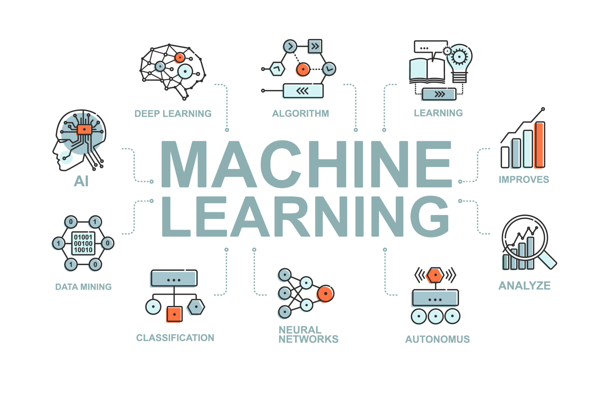
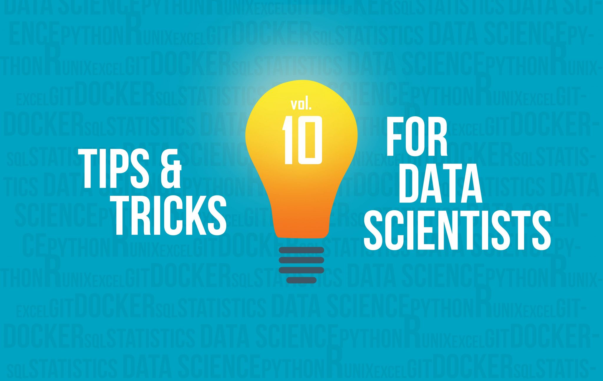

Les tendances de la Data Science en 2025
Découvrez les dernières tendances en matière de data science, machine learning et IA qui façonneront l'année à venir.
Lire l'articleÉtudiant en Data Science à l'IUT de Vannes, passionné par l'intelligence artificielle et l'analyse des données. Je transforme des données complexes en insights actionnables et en solutions innovantes pour résoudre des défis métier concrets.
Je suis un Data Scientist passionné par l'exploration des données et la création de modèles d'apprentissage automatique robustes. Mon objectif est de résoudre des problèmes complexes en utilisant des techniques avancées d'analyse de données et d'intelligence artificielle pour générer un impact métier réel.
Actuellement étudiant à l'IUT de Vannes en BUT Sciences des Données option VCOD, je combine théorie académique et projets pratiques pour développer une expertise complète. J'ai un intérêt particulier pour les systèmes de recommandation, l'analyse prédictive, le NLP et l'IA générative.
"Les données racontent une histoire, mon rôle est de la découvrir et de la rendre accessible pour prendre les meilleures décisions."
BUT Sciences des Données · option VCOD — IUT de Vannes
Machine Learning, Analyse de données, IA Générative, Visualisation
Créer des solutions data-driven pour résoudre des problèmes concrets à fort impact
Classification, Régression, Clustering, Deep Learning
Matplotlib, Seaborn, Plotly, Power BI, R Shiny
Tests d'hypothèse, Analyse de régression, Inférence
Gestion de version, collaboration
AWS, Google Cloud Platform
Hadoop, Spark, MongoDB
Contexte : Stage de fin de BUT Sciences des Données au sein de l'équipe Data de HERIGE Industries / ATLANTEM. Les missions s'inscrivent dans le programme transverse DATA'LIB, qui structure et valorise les données du groupe sur Microsoft Azure.
Objectif : Produire deux tableaux de bord Power BI opérationnels — l'un pour fiabiliser la base de contacts Salesforce, l'autre pour piloter l'activité informatique via Redmine.
Résultat : Tableau de bord Data Quality mis en production — 18% de doublons et 1 849 faux contacts identifiés sur la base active. Rapport Redmine 8 pages livré et validé par le RSI, couvrant l'ensemble des indicateurs demandés.
Ce projet dote les points de vente Orange Maroc d'un agent IA capable de répondre aux questions des conseillers et clients sur les offres, tarifs, recharges, etc., grâce à l'intelligence artificielle.
Contexte : Conception d'une solution de suivi en temps réel de la fréquentation des stations de vélos à Marseille et Nantes.
Sources : Données temps réel AMP Métropole & Nantes Métropole, météo France.
Résultat : Un tableau de bord interactif facilitant la prise de décision pour la gestion des vélos en libre service.
Ce projet explore les taux de criminalité aux États-Unis à partir de données publiques.

Menu principal
Dans le cadre du BUT Science des Données, nous avons mené un projet d'automatisation de la gestion et de l'analyse des données pour l'EPSM Sud Bretagne. L'objectif : concevoir un tableau de bord interactif assurant le suivi automatisé de l'activité clinique et administrative.
Découvrez les dernières tendances en matière de data science, machine learning et IA qui façonneront l'année à venir.
Lire l'article
Un guide étape par étape pour mener à bien vos projets de machine learning, de la collecte des données à la mise en production.
Lire l'article
Découvrez des techniques avancées en Python pour améliorer l'efficacité de votre code et optimiser vos analyses de données.
Lire l'articleVannes, Bretagne, France